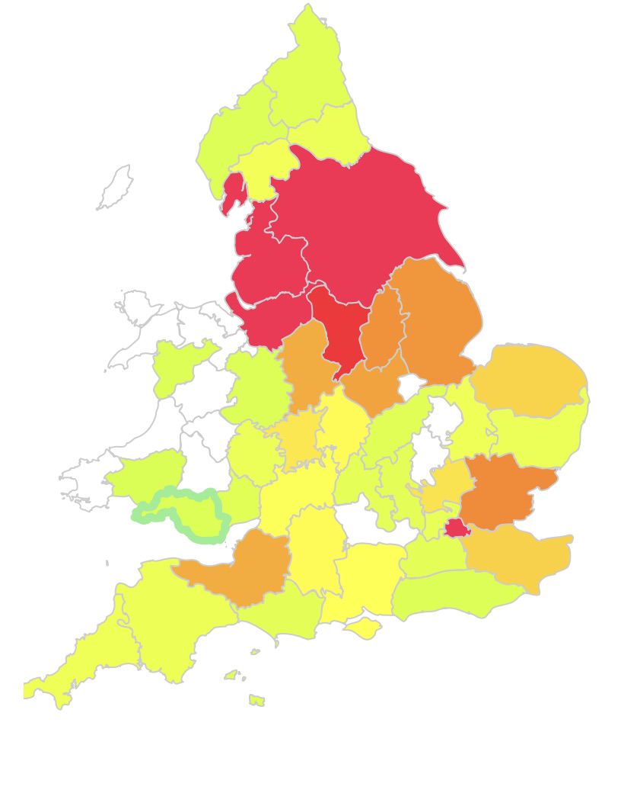

Whitaker
Surname Origin: Habitational name from any of various places named with Old English hwit 'white' or hw?te 'wheat' + aecer' cultivated land; as for example Whitaker in Lancashire meaning 'white field'.

19th century distribution of the Whitaker surname
Our Whitaker family line dates from John Whitaker, born in Mansfield Woodhouse in about 1818. John's mother was Ann Sissons and his father was Sampson Slaney, both of Mansfield Woodhouse. Ann was married to John Whitaker (snr) at the time of John's (jnr) birth.The couple had been married since 1814. Sampson Slaney was also married to Elizabeth Baker and had been married since 1810. It is possible that John (jnr) was the result of an adulterous relationship, but we will never know. He had half siblings from both marriages.
John Whitaker first appears in public records in the 1841 Census for Mansfield Woodhouse. He is living with his adopted father and like his father, is described as a cotton stockinger.
Current Research :